On the basis of the following observations made with aqueous solutions, assign secondary valences to metals in the following compounds:
| Formula | Moles of AgCl precipitated per mole of the compounds with excess A g N O3 |
|---|---|
| (i) PdCl2 .4 NH3 | 2 |
| (ii) NiCl2 · 6 H2 O | 2 |
| (iii) PtCl4 .2 HCl | 0 |
| (iv) CoCl3 .4 NH3 | 1 |
| (v) PtCl2 .2 NH3 | 0 |
Write the formulas for the following coordination compounds:
(a) tetraammineaquachloridocobalt(III) chloride
(b) potassium tetrahydroxidozincate(II)
(c) potassium trioxalatoaluminate(III)
(d) dichloridobis(ethane-1,2-diamine)cobalt(III)
(e) tetracarbonylnickel(0)
tetraammineaquachloridocobalt(III) chloride
potassium tetrahydroxidozincate(II)
potassium trioxalatoaluminate(III)
dichloridobis(ethane-1,2-diamine)cobalt(III)
tetracarbonylnickel(0)
Write the IUPAC names of the following coordination compounds:
(a) [Pt(NH3)2 Cl(NO2)]
(b) K3[Cr(C2 O4)3]
(c) [CoCl2(en)2] Cl
(d) [Co(NH3)5(CO3)] Cl
(e) Hg[Co(SCN)4]
[Pt(NH3)2 Cl(NO2)]
K3[Cr(C2 O4)3]
[CoCl2(en)2] Cl
[Co(NH3)5(CO3)] Cl
Hg[Co(SCN)4]
Why is geometrical isomerism not possible in tetrahedral complexes having two different types of unidentate ligands coordinated with the central metal ion?
Draw structures of geometrical isomers of [Fe(NH3)2(CN)4]-
Out of the following two coordination entities which is chiral (optically active)?
(a) cis- [CrCl2(ox)2]3-
(b) trans- [CrCl2(ox)2]3-
The spin only magnetic moment of [MnBr4]2- is 5.9 BM. Predict the geometry of the complex ion ?
Write the formulas for the following coordination compounds:
Write the IUPAC names of the following coordination compounds:
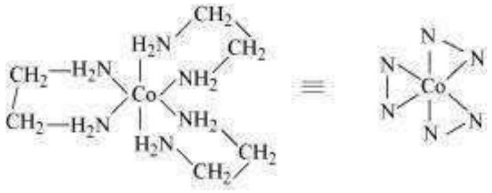
Indicate the types of isomerism exhibited by the following complexes and draw the structures for these isomers:
Give evidence that [Co(NH3)5 Cl] SO4 and [Co(NH3)5(SO4)] Cl are ionisation isomers.
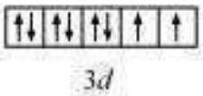
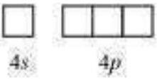
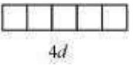
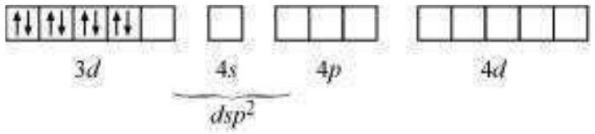
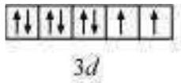
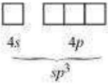
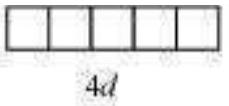
Explain on the basis of valence bond theory that [Ni(CN)4]2- ion with square planar structure is diamagnetic and the [NiCl4]2- ion with tetrahedral geometry is paramagnetic.
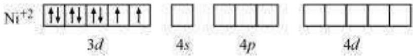
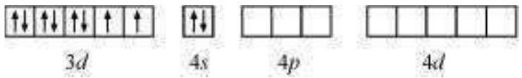
5.6[NiCl4]2- is paramagnetic while [Ni(CO)4] is diamagnetic though both are tetrahedral. Why?
5.7[Fe(H2 O)6]3+ is strongly paramagnetic whereas [Fe(CN)6]3- is weakly paramagnetic. Explain.
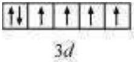
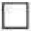
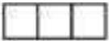
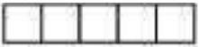
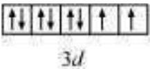
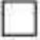
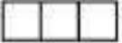
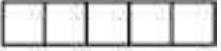
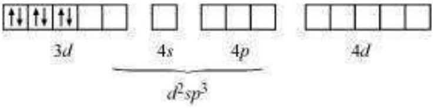
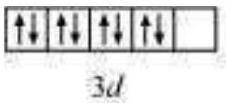
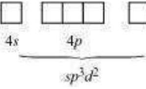
Explain [Co(NH3)6]3+ is an inner orbital complex whereas [Ni(NH3)6]2+ is an outer orbital complex.
| [Co(NH3)6]3+ | [Ni(NH3)6]2+ |
|---|---|
| Oxidation state of cobalt = +3 | Oxidation state of Ni = +2 |
| Electronic configuration of cobalt = d6 | Electronic configuration of nickel = d8 |
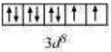
Predict the number of unpaired electrons in the square planar [Pt(CN)4]2- ion.
The hexaquo manganese(II) ion contains five unpaired electrons, while the hexacyanoion contains only one unpaired electron.
Explain using Crystal Field Theory.
Explain the bonding in coordination compounds in terms of Werner's postulates.
FeSO4 solution mixed with (NH4)2 SO4 solution in 1:1 molar ratio gives the test of Fe2+ ion but CuSO4 solution mixed with aqueous ammonia in 1:4 molar ratio does not give the test of Cu2+ ion. Explain why?
Explain with two examples each of the following: coordination entity, ligand, coordination number, coordination polyhedron, homoleptic and heteroleptic.
What is meant by unidentate, didentate and ambidentate ligands? Give two examples for each.
Specify the oxidation numbers of the metals in the following coordination entities:
[Co(H2 O)(CN)(en)2]2+
[CoBr2(en)2]+
[PtCl4]2-
K3[Fe(CN)6]
[Cr(NH3)3 Cl3]
Using IUPAC norms write the formulas for the following:
Tetrahydroxidozincate(II)
Potassium tetrachloridopalladate(II)
Diamminedichloridoplatinum(II)
Potassium tetracyanidonickelate(II)
Pentaamminenitrito-O-cobalt(III)
Hexaamminecobalt(III) sulphate
Potassium tri(oxalato)chromate(III)
Hexaammineplatinum(IV)
Tetrabromidocuprate(II)
Pentaamminenitrito-N-cobalt(III)
Using IUPAC norms write the systematic names of the following:
[Co(NH3)6] Cl3
[Pt(NH3)2 Cl(NH2 CH3)] Cl
[Ti(H2 O)6]3+
[Co(NH3)4 Cl(NO2)] Cl
[Mn(H2 O)6]2+
[NiCl4]2-
[Ni(NH3)6] Cl2
[Co(en)3]3+
[Ni(CO)4]
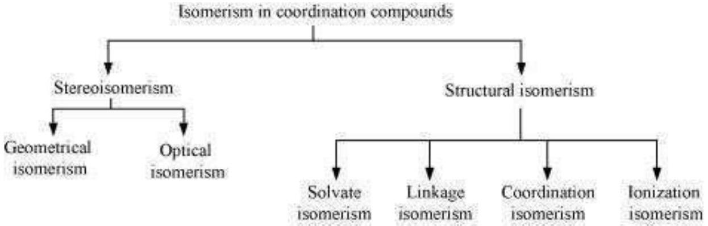
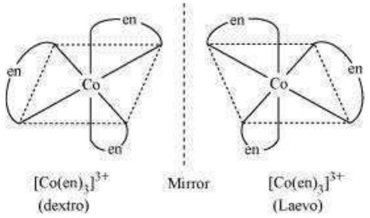
List various types of isomerism possible for coordination compounds, giving an example of each.
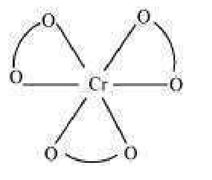
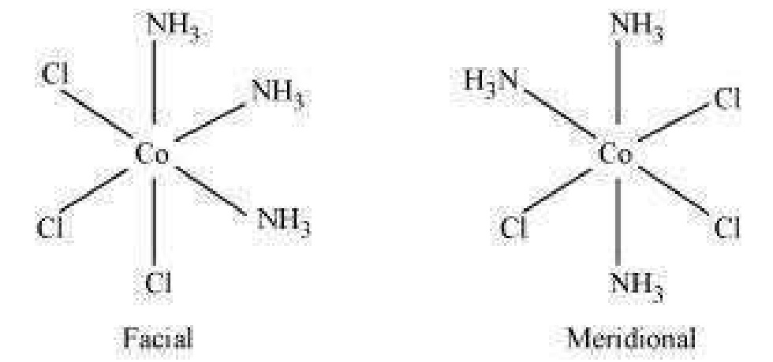
How many geometrical isomers are possible in the following coordination entities?
[Cr(C2 O4)3]3-
[Co(NH3)3 Cl3]
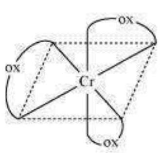
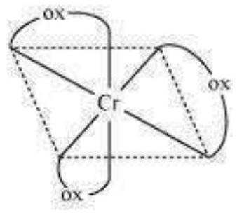
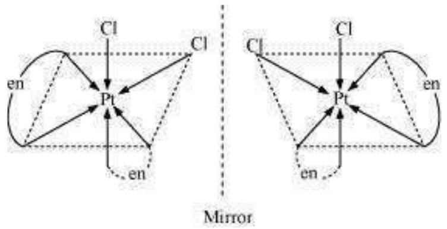
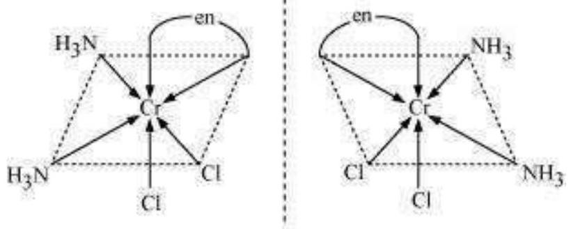
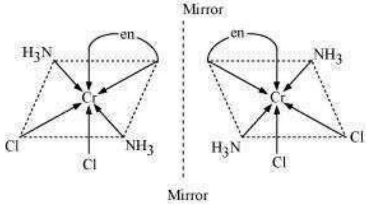
Draw the structures of optical isomers of:
[Cr(C2 O4)3]3-
[PtCl2(en)2]2+
[Cr(NH3)2 Cl2( en )]+
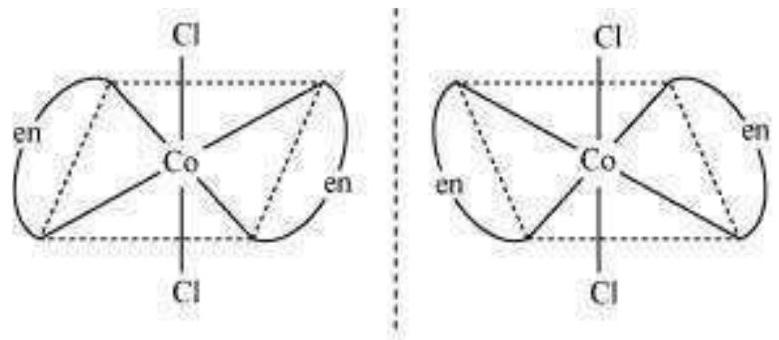
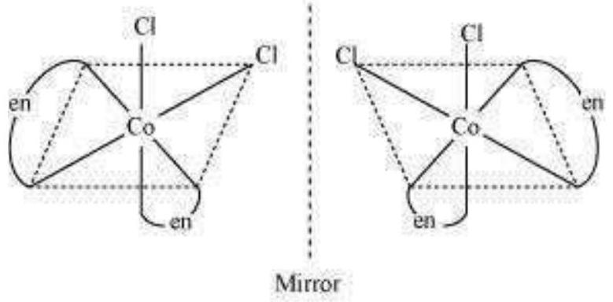
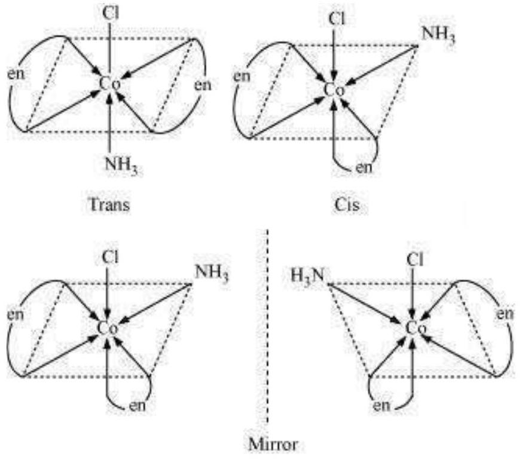
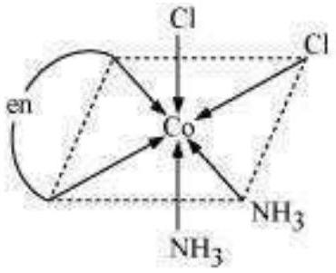
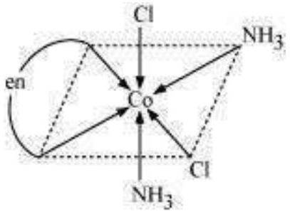
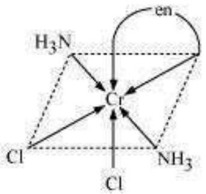
Draw all the isomers (geometrical and optical) of:
[CoCl2(en)2]+
[Co(NH3) Cl(en)2]2+
[Co(NH3)2 Cl2(en)]+
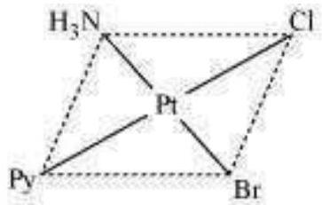
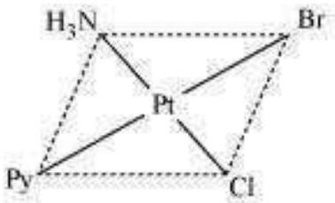
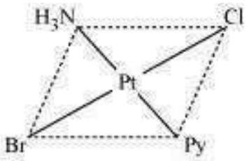
Write all the geometrical isomers of [Pt(NH3)(Br)(Cl)(py)] and how many of these will exhibit optical isomers?
Aqueous copper sulphate solution (blue in colour) gives:
(i) a green precipitate with aqueous potassium fluoride and
(ii) a bright green solution with aqueous potassium chloride.
Explain these experimental results.
What is the coordination entity formed when excess of aqueous KCN is added to an aqueous solution of copper sulphate? Why is it that no precipitate of copper sulphide is obtained when H2 S( g) is passed through this solution?
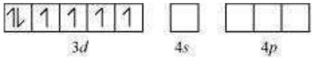
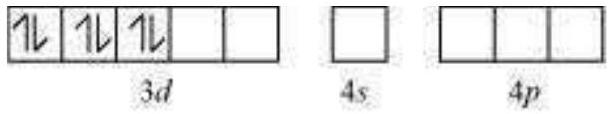
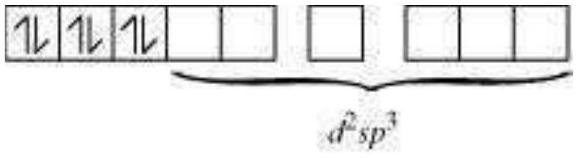
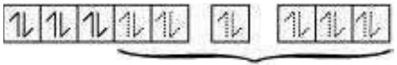
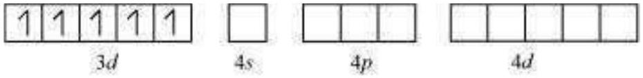
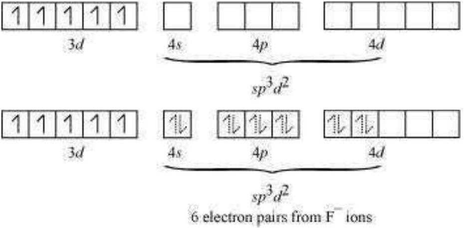
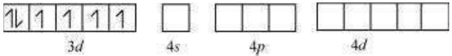
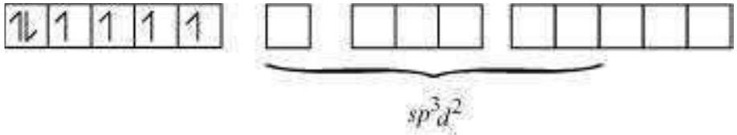
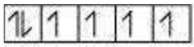
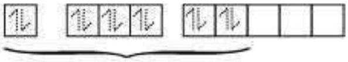
Discuss the nature of bonding in the following coordination entities on the basis of valence bond theory:
[Fe(CN)6]4-
[FeF6]3-
[Co(C2 O4)3]3-
[CoF6]3-
Draw figure to show the splitting of d orbitals in an octahedral crystal field.
What is spectrochemical series? Explain the difference between a weak field ligand and a strong field ligand.
What is crystal field splitting energy? How does the magnitude of Δo decide the actual configuration of d orbitals in a coordination entity?
[Cr(NH3)6]3+ is paramagnetic while [Ni(CN)4]2- is diamagnetic. Explain why?
A solution of [Ni(H2 O)6]2+ is green but a solution of [Ni(CN)4]2- is colourless. Explain.
[Fe(CN)6]4- and [Fe(H2 O)6]2+ are of different colours in dilute solutions. Why?
Discuss the nature of bonding in metal carbonyls.
Give the oxidation state, d orbital occupation and coordination number of the central metal ion in the following complexes:
K3[Co(C2 O4)3]
cis- [CrCl2(en)2] Cl
(NH4)2[CoF4]
[Mn(H2 O)6] SO4
Write down the IUPAC name for each of the following complexes and indicate the oxidation state, electronic configuration and coordination number.
Also give stereochemistry and magnetic moment of the complex:
K[Cr(H2 O)2(C2 O4)2] · 3 H2 O
[Co(NH3)5 Cl-] Cl2
[CrCl3(py)3]
Cs[FeCl4]
K4[Mn(CN)6]
Explain the violet colour of the complex [Ti(H2 O)6]3+ on the basis of crystal field theory.
What is meant by the chelate effect? Give an example.
Discuss briefly giving an example in each case the role of coordination compounds in:
biological systems
medicinal chemistry and
analytical chemistry
extraction / metallurgy of metals.
How many ions are produced from the complex Co(NH3)6 Cl2 in solution?
(i) 6
(ii) 4
(iii) 3
(iv) 2
Amongst the following ions which one has the highest magnetic moment value?
(i) [Cr(H2 O)6]3+
(ii) [Fe(H2 O)6]2+
(iii) [Zn(H2 O)6]2+
Amongst the following, the most stable complex is
(i) [Fe(H2 O)6]3+
(ii) [Fe(NH3)6]3+
(iii) [Fe(C2 O4)3]3-
(iv) [FeCl6]3-
What will be the correct order for the wavelengths of absorption in the visible region for the following:
[Ni(NO2)6]4-,[Ni(NH3)6]2+,[Ni(H2 O)6]2+ ?